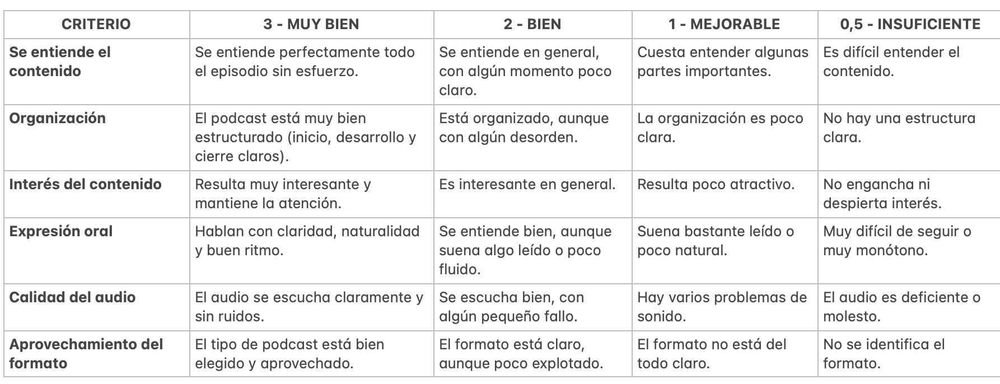
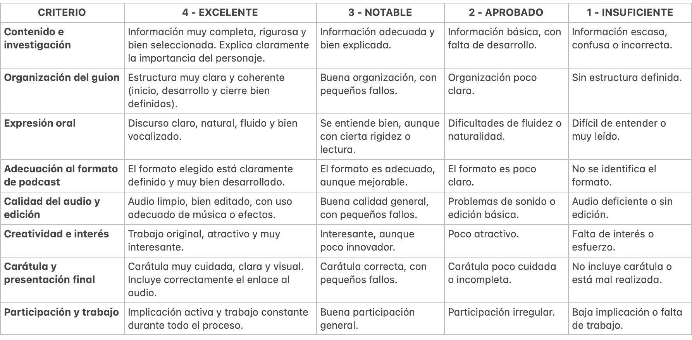

TAREA 3: GRABACIÓN Y EDICIÓN DEL PODCAST. Trabajo fuera del aula.
|
Objetivos:
|
Una vez que tengáis el guion preparado y lo hayáis revisado utilizando la rúbrica...¡es el momento de grabar vuestro episodio de Voces Feminarum!
Antes de empezar, es importante que comprobéis que vuestro trabajo cumple con los criterios que hemos visto: que el formato esté claro, que la información esté bien explicada, que el guion tenga una estructura ordenada y que el lenguaje sea claro y natural. Si algo no está bien, es mejor corregirlo antes de grabar. Recordad que tenéis el tutorial con recomendaciones para grabar y editar vuestro episodio.
Una vez revisado el tutorial, es hora de grabar el episodio, podéis hacerlo en casa, en la biblioteca del centro o en el aula de radio Radio Pérez, intentando siempre que haya poco ruido. Durante la grabación debéis hablar con claridad, vocalizar bien y evitar leer constantemente el guion, ya que el podcast debe sonar natural.
Una vez grabado el audio, deberéis editarlo utilizando aplicaciones como CapCut u otras que ya conozcáis. Podéis añadir música o efectos de sonido, pero recordad que deben mejorar el resultado final y no distraer.
Para la entrega:
Pegad vuestro episodio en este tablero padlet: buscad la carátula de vuestro episodio y pegad el link de de la grabación. Así tendremos un espacio en el que compartir todos los episodios de manera sencilla.
El objetivo es que consigáis contar la historia de vuestro personaje de forma clara y atractiva, de manera que quien escuche vuestro podcast entienda quién era y por qué su historia es importante.
Tarea 4: ESCUCHA Y VALORACIÓN DE LOS EPISODIOS
|
Secuenciación: dos sesiones de 55 minutos Objetivos:
|
Una vez que todos los episodios estén publicados en el Padlet, dedicaremos una o dos sesiones en clase a escucharlos de manera conjunta.
Mientras escuchamos los episodios, tenéis tarea:
- Evaluar el trabajo de vuestros compañeros y compañeras. Para ello, podréis utilizar la rúbrica que encontraréis a continuación.
- Escoger uno de los episodios y tomar notas sobre el mismo. Esta información os servirá para la tarea 5.
- Es importante que realicéis una valoración justa y responsable, basándoos en los criterios establecidos y no en opiniones personales.
- En caso de que algún podcast no alcance los mínimos esperados, se dará la oportunidad de repetir o mejorar el trabajo, siguiendo las recomendaciones proporcionadas.
- El objetivo de esta tarea es aprender a escuchar de forma activa, valorar el trabajo de los demás de manera objetiva y tomar conciencia de los aspectos que hacen que un podcast funcione bien.
RÚBRICA PARA VALORAR EL TRABAJO DE VUESTROS COMPAÑEROS Y COMPAÑERAS:

RÚBRICA USADA POR LA DOCENTE PARA EVALUAR EL TRABAJO DE CADA PAREJA:
